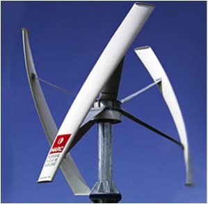

TuEnergía
Producción de energía por medio de un Generador (Eólico o Solar) que se instala en negocios u hogares por medio de una inversión inicial que se recupera mensualmente.
Este proyecto pretende prestar un servicio de producción de energía en donde la empresa coloca un Generador (Eólico o Solar) en el lugar donde se va a usar, ya sea un hogar o un negocio pequeño. El cliente sin el servicio normalmente pagaría un elevado gasto por el servicio de electricidad común. Con TuEnergía el cliente pagaría un recibo de luz menor, pagaría el servicio de la producción de energía y aún así estaría generando un ahorro en el total del gasto original de electricidad. Los sistemas contemplados son de 1kw/h hasta 5kw/h. Los clientes potenciales son aquellos hogares que caen en la tarifa DAC, que son de alto consumo, al estar estos produciendo su energía, requieren menos de la red de CFE por lo cual caen a una tarifa más baja, aumentando así su ahorro. Los contratos se generarían por entre 4 a 6 años, que es lo que tardaría en pagarse el generador, ya que ese costo hundido lo tendría la empresa. Al final del plazo, los clientes pueden decidir si comprar el sistema instalado y continuar usándolo por el plazo de vida útil que es de alrededor de 20 años. Así que tienen la opción de seguir produciendo su energía sin costos adicionales. TuEnergía se encargaría de todo el trabajo de compra, importación, instalación, monitoreo, seguro y mantenimiento del equipo mientras dure el contrato. El cliente podrá ver a través de una interfaz web que tanta energía esta produciendo su generador gracias a un sencillo sistema de monitoreo. Es necesario contar con el recurso eólico o solar para el funcionamiento del sistema; un generador de este tipo puede costar entre 2000 y 5000 USD, mas diversos costos asociados, por lo que se requiere una inversión inicial fuerte para la empresa pero que se irá recuperando mes con mes. El cliente puede o no pagar un depósito lo cual le reduciría la cantidad de tiempo que tiene que estar con el contrato con la empresa. A final de cuentas este proyecto beneficia a varias partes, primero al cliente, ya que reduce su gasto en energía eléctrica, el impacto ambiental; concientizándolo sobre el tema de la energía, para la empresa pues genera utilidades el tener cierto numero de generadores operando, emplea a técnicos, analistas y administradores, promueve el uso de las energías renovables en una escala pequeña, es un modelos, que de ser exitoso puede ser replicado en otras partes de la republica y que ya se esta utilizando en otras partes del mundo.
